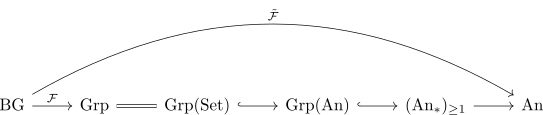
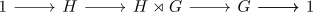
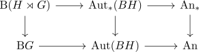

semidirect product via unstraightening
Proposition
Let $G \rightarrow \mathrm{Aut}_{\mathrm{Grp}}(H)$ be a group action in category Group, regarded as functor

Then the semidirect product is equivalently given by
\begin{align*}
\Omega \mathrm{Un}(\tilde{\mathcal{F}})
\end{align*}
or
\begin{align*}
\end{align*}
Proof
note the recognition principle for anima valued groups and connected pointed animas shows
\begin{align*}
\mathrm{Aut}_{\mathrm{Grp}(\mathrm{An})}(H) \simeq \mathrm{Aut}_{\mathrm{An}_{\geq 1,*}}(BH) \simeq \mathrm{Aut}_{\mathrm{An}_{*}}(BH)
\end{align*}
We want

Now using classification of pointed fibrations gives that spilt
